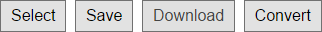
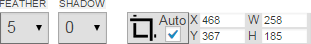

Magic Edge - Image Background Remover - v1.2.0
The easiest way to remove background from images
- created: 09/30/2014
- latest update: 03/30/2015
- by: Srdjan Arsic
- email: srdjanarsic@gmail.com
Thank you for purchasing Magic Edge. If you have any questions that are beyond the scope of this help file, please feel free to email via my user page contact form here.
Installation
- Copy Magic Edge files to your project directory.
-
Include files in you HTML page.
<script type="text/javascript" src="./js/jquery.js"></script> <script type="text/javascript" src="./js/magic-edge-inc.js"></script> <script type="text/javascript" src="./js/magic-edge.js"></script> <script type="text/javascript" src="./js/farbtastic.js"></script> <link rel="stylesheet" type="text/css" href="./css/magic-edge.css" /> <link rel="stylesheet" type="text/css" href="./css/farbtastic.css" /> -
Place holder inside HTML page.
<div id="MagicEdgeHolder"><div> -
Add javascript code.
jQuery(document).ready(function() { initializeMagicEdge(); }); function initializeMagicEdge(){ var me = new MagicEdge(); me.init(document.getElementById("MagicEdgeHolder")); } -
Example with config options.
var a = new MagicEdge(); a.setConfig({ width:"full", height:"full", zoomMultipliers: [0.1, 0.2, 0.4, 0.7, 1, 1.5, 2, 2.5, 3, 4, 6, 8, 10, 14, 20], saveNameSufix:"transparent-", saveAction: "download", ajaxUrl: "ajax.php", magicWandTolerance:5, magicWandBorderWidth:10 }); a.init(document.getElementById("MagicEdgeHolder"));- width (string) - Width ("full" or value in pixels e.g. "500px").
- height (string) - Height ("full" or value in pixels e.g. "500px").
- zoomMultipliers ( array ) - array of zoom multipliers.
- saveNamePrefix ( string ) - New name prefix.
- saveAction ( string ) - Value "ajax" for Save button, "download" for Download button and "both" for both buttons.
- ajaxUrl ( string ) - URL used for sending transparent image to server.
- magicWandTolerance ( array ) - Initial Magic wand tolerance.
- magicWandBorderWidth ( array ) - Initial Magic wand border.
Step by step Tutorial
It's very easy to use Magic Edge. Image conversion can be done in just a several steps
1. Select an image
After you press "Select" button, in the window select the image you wish to make transparent.
2. Select edge, mark foreground and background
Select approximate edge on the image by using Magic Edge tool. By using Foreground and Background tools, mark both areas.
3. Convert image
Click "Convert" button to start conversion process. After few seconds transparent image will appear into right box.
4. Save image
Use "Save" button to save image. New name will be formatted form original name with additional "transparent" prefix.
Toolbar description
Selection tools

Magic Edge tool, Magic Wand tool, Foreground marker tool, Background marker tool, Eraser tool
Clear selection tools

Clear marker on the image.
Undo
Undo and redo for the marker tools
Navigation tools
Simple tools for zoom and pan.
Main tools

Use main tools to select, save, download and convert the image.
Fine edge adjuster and crop

Edge Feather, Edge Blur and Image Crop tools.
Preview background tools
Set the background of the preview box (right box).
View resizer
Resize the view to full size.
Videos
Videos
- Basic
- Zoomed
- Fixing
- Magic wand
Videos
Basic
Basic example shows how to select edge and mark background and foreground areas.
Zoomed
"Zoomed technique" is very useful for better edge recognition. This video demonstrate how to draw Edge on zoomed image by using space bar for fast switch between Magic Edge and Pan/Move tool.
Fixing
If the edge is not accurate recognized, clear the yellow edge, zoom several times and draw thinner edge.
Magic wand
Magic wand is very useful for white or gradient background removal.